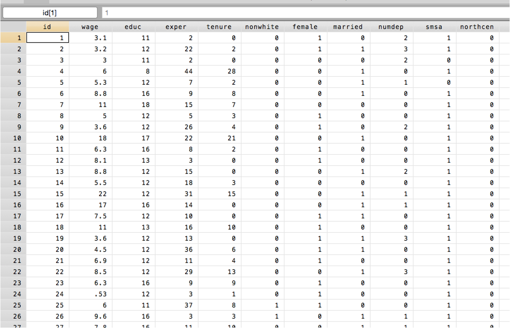
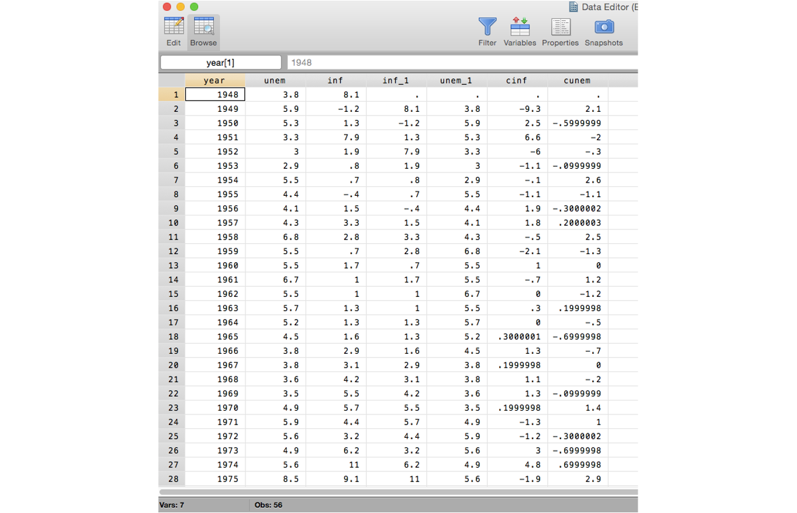
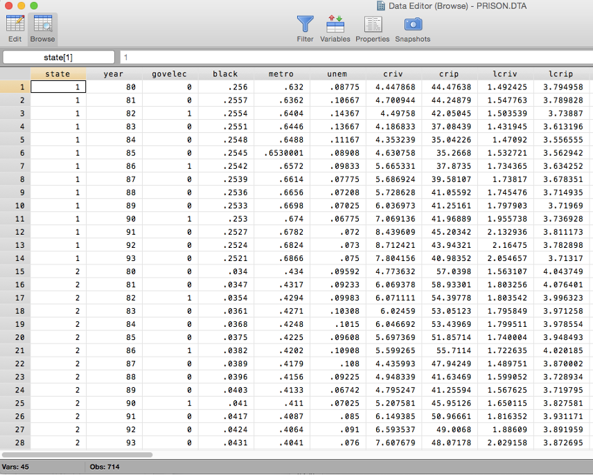
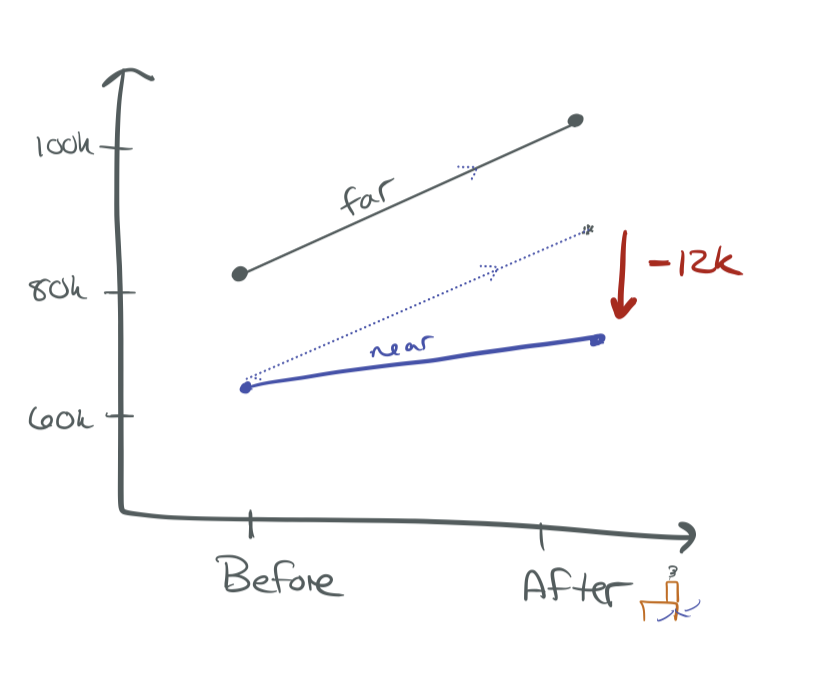

Regression with Panel Data
SW Chapter 10
Spring 2026
Learning Objectives
By the end of this chapter, you will be able to:
- Distinguish cross-sectional, time-series, and panel data
- Estimate and interpret difference-in-differences regressions
- Understand the first-difference estimator and why fixed effects drop out
- Estimate regressions with entity and time fixed effects
- Explain when clustered standard errors are needed
Types of Data
Cross-Sectional Data
A random sample of units observed at one point in time.
This is what we’ve been using so far!
- Relationship between hours worked and wages
- How CEO tenure relates to compensation
- Test scores and class size across California districts
Cross-Sectional Data

Stata data browser: each row is a different individual, observed once
Time-Series Data
Observations on one unit over time.
- Stock-market dividends for Apple over the past 10 years
- GDP growth over time
- Annual infant mortality rates for the U.S.
Time-Series Data

Stata data browser: each row is a different year for one country
Panel (Longitudinal) Data
Multiple units observed across multiple time periods — cross-sections over time.
- Track how individuals’ earnings change over time
- Crime rates by city over time
- Very useful for policy analysis!
Panel vs. Pooled Cross-Sections
A panel tracks the same units over time (Bob in 1990 and Bob in 1991).
A pooled cross-section draws different units each period (Bob in 1990, Jane in 1991) — like multiple waves of the ACS.
Panel Data

Stata data browser: same entities tracked across time periods
Panel vs. Repeated Cross-Sections
Repeated (pooled) cross-sections:
- Draw randomly from a large population at various points in time
- Observations are independent over time
- Independence \(\Rightarrow\) inference is straightforward
Panel data:
- Track the same population over time
- Population may be independent at first draw: Bob in 1990 is independent of Jane in 1990
- But dependence over time: Bob in 1990 is related to Bob in 1991
- Detroit will probably have high crime rates next year too
This dependence has important implications for standard errors (more on this later).
Difference-in-Differences
Motivating Example: Garbage Incinerator
Question: What is the effect of a garbage incinerator on nearby housing prices?
After the incinerator was built:

\[\widehat{rprice} = 101{,}308 - 30{,}688 \cdot nearinc\]
Houses near the incinerator sell for ~$30k less. Did the incinerator cause this?
Not So Fast…
Look at the relationship before the incinerator was built:

\[\widehat{rprice} = 82{,}517 - 18{,}824 \cdot nearinc\]
The incinerator was built in a place where housing prices were already depressed!
The $30k gap reflects both the incinerator effect and pre-existing differences.
The Before-and-After Picture

The Difference-in-Differences Estimate
We need to subtract out the pre-existing difference:
\[\hat{\delta}_1 = \underbrace{(-30{,}688)}_{\text{after gap}} - \underbrace{(-18{,}824)}_{\text{before gap}} = -11{,}864\]
The incinerator reduced nearby prices by ~$12k — not $30k.
Equivalently:
\[\hat{\delta}_1 = (\bar{y}_{after, near} - \bar{y}_{after, far}) - (\bar{y}_{before, near} - \bar{y}_{before, far})\]
This is the difference-in-differences (DiD) estimator.
DiD Graphically

The DiD estimate is the gap between actual and counterfactual
The dashed line shows where near-incinerator prices would have been if they followed the same trend as far-away prices.
DiD in a Regression Framework
We can capture all of this in a single regression:
\[rprice_i = \beta_0 + \delta_0 \cdot after_i + \beta_1 \cdot nearinc_i + \delta_1 \cdot (after_i \times nearinc_i) + u_i\]
| Before (\(after = 0\)) | After (\(after = 1\)) | After \(-\) Before | |
|---|---|---|---|
| Control (far) | \(\beta_0\) | \(\beta_0 + \delta_0\) | \(\delta_0\) |
| Treatment (near) | \(\beta_0 + \beta_1\) | \(\beta_0 + \delta_0 + \beta_1 + \delta_1\) | \(\delta_0 + \delta_1\) |
| Treat \(-\) Control | \(\beta_1\) | \(\beta_1 + \delta_1\) | \(\delta_1\) |
\(\delta_1\) is the DiD estimate — the coefficient on the interaction term.
Policy Evaluation with DiD
This logic applies broadly to any setting with:
- A before/after period
- Treatment/control groups
\[y_{it} = \beta_0 + \delta_0 \cdot after_t + \beta_1 \cdot treated_i + \delta_1 \cdot (after_t \times treated_i) + u_{it}\]
The Parallel Trends Assumption
DiD requires that in the absence of treatment, the gap between treatment and control groups would have stayed parallel over time.
- There can be unobserved factors at one point in time, if they affect both groups equally
- The two groups can be very different from each other, so long as they are on the same trajectories
Knowledge Check
In the incinerator example, what would violate parallel trends?
. . .
If, say, a new highway was built near the incinerator site at the same time — affecting near-incinerator prices but not far-away prices — that would break parallel trends.
Two-Period Panel Data: First Differencing
From DiD to Panel Data
Now assume we observe the same entities in two time periods.
Example: Unemployment and crime across cities in 1982 and 1987.
- Detroit has high unemployment and high crime
- Does high unemployment cause high crime, or is there another explanation?
- Explanatory variables might help — but what if we don’t have them?
Key Insight
If cities are observed in at least two periods and other factors affecting crime stay approximately constant, we can estimate causal effects without additional controls.
The Panel Data Model
\[crmrte_{it} = \beta_0 + \delta_0 \cdot d87_t + \beta_1 \cdot unemp_{it} + a_i + u_{it}\]
where \(t = 1982, 1987\)
- \(d87_t\): time dummy for the second period
- \(a_i\): unobserved time-constant factors (entity fixed effects)
- Detroit’s culture, geography, historical factors, etc.
- \(u_{it}\): other unobserved factors (idiosyncratic error)
The problem: \(a_i\) is likely correlated with \(unemp_{it}\) — cities with certain unobserved characteristics have both high unemployment and high crime. This is OVB.
The First-Difference Trick
Write the model for each period:
\[crmrte_{i,1987} = \beta_0 + \delta_0 + \beta_1 \cdot unemp_{i,1987} + a_i + u_{i,1987}\] \[crmrte_{i,1982} = \beta_0 + \beta_1 \cdot unemp_{i,1982} + a_i + u_{i,1982}\]
Subtract the second from the first:
\[\Delta crmrte_i = \delta_0 + \beta_1 \cdot \Delta unemp_i + \Delta u_i\]
The Fixed Effect Drops Out!
Because \(a_i - a_i = 0\), all time-invariant unobserved factors are eliminated. We don’t need to measure or control for them.
First-Difference Estimate
Estimate the first-differenced equation by OLS:
\[\Delta \widehat{crmrte} = 15.4 + 2.22 \cdot \Delta unemp\]
Interpretation: A 1 percentage point increase in the unemployment rate is associated with 2.22 more crimes per 1,000 people.
What First-Differencing Can and Cannot Do
- Solves: Time-invariant omitted variable bias (city culture, geography, etc.)
- Does not solve: Time-varying endogeneity (factors that change across cities over time)
- Limitation: Imprecise if \(X\) varies little over time; impossible to estimate effects of time-invariant variables
Fixed Effects Estimation
The Idea Behind Fixed Effects
Instead of differencing, what if we control for each entity directly?
Consider a panel of wages over time. There might be unobserved Bob-specific characteristics:
- Bob is hard-working (+)
- Bob is a competitive negotiator (+)
- Bob smells funny (−)
We can never control for all of Bob’s unique quirks.
But we can “control for” Bob — give Bob his very own fixed effect: the unique “stuff” that Bob brings to the table.
This only covers things that stay constant over time.
Fixed Effects: The Math
Start with: \[y_{it} = \beta_1 x_{it1} + \cdots + \beta_k x_{itk} + a_i + u_{it}\]
Average over time for each entity: \[\bar{y}_i = \beta_1 \bar{x}_{i1} + \cdots + \beta_k \bar{x}_{ik} + a_i + \bar{u}_i\]
Subtract (time-demeaning): \[[y_{it} - \bar{y}_i] = \beta_1 [x_{it1} - \bar{x}_{i1}] + \cdots + \beta_k [x_{itk} - \bar{x}_{ik}] + [u_{it} - \bar{u}_i]\]
Because \(a_i - a_i = 0\), the fixed effect drops out!
- Estimate the time-demeaned equation by OLS
- This uses within-entity variation only: how \(X\) and \(Y\) move within the same entity over time
- This is called within estimation
Three Ways to Estimate FE in Stata
Option 1: Manual Demeaning
Demean your data by hand, then estimate OLS on demeaned data.
Entity Fixed Effects: What They Control For
Key Principle
Entity fixed effects control for all time-invariant factors — observed or unobserved.
You don’t need to include time-invariant covariates in a fixed-effects model — they are already accounted for!
Practical notes:
- We don’t usually interpret the fixed effect coefficients themselves
- Which entity is the “omitted” group (avoiding the dummy variable trap) doesn’t matter — we’re not interpreting them
- Fixed effects are typically not reported in regression output
Time Fixed Effects
What about shocks that affect all entities equally at a given time?
- A national recession hits all cities in 2008
- A federal policy change affects all states simultaneously
- Inflation affects all firms’ costs in the same year
Add time fixed effects: a dummy for each time period.
\[y_{it} = \beta_1 x_{it} + a_i + \lambda_t + u_{it}\]
- \(a_i\): entity fixed effect (absorbs entity-specific, time-invariant factors)
- \(\lambda_t\): time fixed effect (absorbs time-specific, entity-invariant factors)
Entity + Time Fixed Effects: What’s Left?
With both entity and time fixed effects:
\[y_{it} = \beta_1 x_{it} + a_i + \lambda_t + u_{it}\]
Controlled for:
- All time-invariant entity characteristics (\(a_i\))
- All entity-invariant time shocks (\(\lambda_t\))
Not controlled for:
- Factors that vary across both entities and time
Knowledge Check
You estimate the effect of a state-level minimum wage increase on employment, with state and year fixed effects. What kind of omitted variable could still bias your results?
. . .
A factor that varies across states and over time — e.g., state-specific economic booms that coincide with minimum wage increases.
Assumptions and Inference
Least Squares Assumptions for Panel Data
Consider a single \(X\):
\[Y_{it} = \beta_1 X_{it} + \alpha_i + u_{it}, \quad i = 1, \ldots, n; \; t = 1, \ldots, T\]
- \(E[u_{it} | X_{i1}, \ldots, X_{iT}, \alpha_i] = 0\)
- \(u_{it}\) cannot be correlated with any present, past, or future values of \(X\)!
- \((X_{i1}, \ldots, X_{iT}, u_{i1}, \ldots, u_{iT})\) are i.i.d. draws across entities
- Only need independence across entities, not within
- \((X_{it}, u_{it})\) have finite fourth moments
- No perfect multicollinearity
If these hold, FE estimates are consistent and normally distributed for large \(n\).
The Problem of Serial Correlation
\[Y_{it} = \alpha_i + \beta_1 X_{it} + \omega_{it}\]
The time-varying error \(\omega_{it}\) reflects factors that change over time but affect the outcome.
Example: If \(Y_{it}\) is traffic fatalities, maybe \(\omega_{it}\) includes road quality in state \(i\).
- Road quality last year \(\approx\) road quality this year
- \(\omega_{i,t}\) and \(\omega_{i,t-1}\) are correlated
This is autocorrelation (or serial correlation) — observations on the same entity over time are not independent.
Why Autocorrelation Matters
Previously, we assumed different observations were independent.
- Implausible for data on the same entity over time
- Without correction, we estimate incorrect standard errors
- Confidence intervals will not have 95% coverage
Autocorrelation Does Not Bias \(\hat{\beta}\)
The coefficients are still consistent — but our inference (standard errors, \(p\)-values, CIs) is wrong.
The Solution: Clustered Standard Errors
Clustered standard errors allow for autocorrelation within entities.
Idea: Allow the error terms \(\omega_{it}\) for different time periods within the same entity to be correlated, while maintaining independence across entities.
In Stata:
Always Cluster in Panel Data
If you’re using panel data, you should almost always cluster your standard errors at the entity level. Failing to do so overstates precision and leads to false rejections.
Recent Developments in DiD
The Staggered Adoption Problem
The classic DiD has two groups and two periods. In practice, policies are often adopted by different units at different times — staggered adoption.
Example: States adopt a job training program in different years.
The natural approach: two-way fixed effects (TWFE).
\[y_{it} = \beta_1 \cdot treated_{it} + \alpha_i + \lambda_t + u_{it}\]
Recent research (roughly 2018–2024) has shown that this “obvious” approach can produce severely misleading estimates — including wrong signs.
Let’s see exactly how this happens.
A Concrete Example: Setup
Suppose a job training program has a true effect that grows over time:
- Year 1 after adoption: productivity rises by +10
- Year 2 after adoption: productivity rises by +30 (the program compounds)
Two states, three years. Without treatment, both would follow the same trend:
| 2018 | 2019 | 2020 | |
|---|---|---|---|
| No-treatment baseline (both states) | 100 | 105 | 110 |
- State E (Early): adopts the program in 2019
- State L (Late): adopts the program in 2020
- No pure control group exists (both eventually get treated)
What Actually Happens
| 2018 | 2019 | 2020 | |
|---|---|---|---|
| State E (treats in 2019) | 100 | 115 | 140 |
| State L (treats in 2020) | 100 | 105 | 120 |
- State E in 2019: \(105 + 10 = 115\) (year 1 effect)
- State E in 2020: \(110 + 30 = 140\) (year 2 effect — program compounds)
- State L in 2020: \(110 + 10 = 120\) (year 1 effect)
The true effect for State L in 2020 is +10. Can TWFE recover this?
What TWFE Does
With no pure control group, TWFE uses State E as the “control” for State L’s treatment in 2020.
The DiD comparison using State E as control:
\[\hat{\delta}_1 = \underbrace{(120 - 105)}_{\Delta \text{State L}} - \underbrace{(140 - 115)}_{\Delta \text{State E}} = 15 - 25 = -10\]
TWFE Says the Effect is −10
The true effect is +10, but TWFE estimates −10. The sign flipped!
Why? State E’s outcome jumped by 25 (not because of a new trend, but because its treatment effect grew from +10 to +30). TWFE interprets this growing treatment effect in the “control” as a normal trend, making State L’s +15 gain look small by comparison.
The Core Problem
Goodman-Bacon (2021) showed this formally: the TWFE estimate is a weighted average of all possible 2×2 DiD comparisons.
Some comparisons are fine:
- Newly treated vs. never treated — exactly what we want
Some are problematic:
- Newly treated vs. already treated — uses treated units as “controls”
When treatment effects change over time (grow, fade, or vary across groups), the already-treated comparisons introduce bias — and can even get negative weights.
This is not a rare edge case. Dynamic treatment effects are the norm in applied economics: job training programs build skills gradually, minimum wage effects accumulate, policy impacts evolve.
New Estimators
Several estimators have been developed to handle staggered adoption correctly:
Callaway and Sant’Anna (2021): Estimate group-time-specific effects, then aggregate. Only uses not-yet-treated or never-treated units as controls.
Sun and Abraham (2021): Interaction-weighted estimator that corrects for heterogeneous effects across adoption cohorts.
de Chaisemartin and D’Haultfoeuille (2020): Identifies which comparisons get negative weights and proposes robust alternatives.
All share one insight: never use already-treated units as controls.
What This Means for Practice
Practical Guidance
- Classic 2×2 DiD (two groups, two periods): TWFE is fine. The new concerns don’t apply.
- Staggered adoption with constant treatment effects: TWFE is usually okay.
- Staggered adoption with dynamic or heterogeneous effects: Use a robust estimator.
How to check: Run both TWFE and a robust estimator. If results are similar, the standard approach is probably fine. If they diverge, trust the robust estimator.
Beyond ECON3500
You won’t need to implement these in this course. But if you do applied research with staggered DiD (very common in policy evaluation), you should be aware of these issues. Stata packages: csdid, did_multiplegt, eventstudyinteract.
Putting It All Together
Comparison of Panel Data Methods
| Method | Data Required | What It Controls | Key Assumption | What Remains |
|---|---|---|---|---|
| DiD | 2 groups, 2 periods | Group-level differences; common time trends | Parallel trends | Group-specific time-varying shocks |
| First Difference | Panel (same units, 2+ periods) | All time-invariant entity factors | No time-varying OVB | Time-varying omitted variables |
| Entity FE | Panel (same units, 2+ periods) | All time-invariant entity factors | No time-varying OVB | Time-varying omitted variables |
| Entity + Time FE | Panel (same units, 2+ periods) | Time-invariant entity factors + entity-invariant time shocks | No entity-and-time-varying OVB | Entity-time-specific shocks |
When to Use What
Difference-in-Differences:
- Repeated cross-sections or panel data
- Clear treatment/control groups and before/after periods
- Need parallel trends assumption
First Differencing:
- Panel data with 2 periods
- Equivalent to entity FE with 2 periods
- Simple, transparent
Fixed Effects:
- Panel data with 2+ periods
- More efficient than first differencing with \(T > 2\)
- Can include entity FE, time FE, or both
Knowledge Check
A researcher has data on 50 states over 20 years and wants to estimate the effect of a policy that was adopted by some states at different times. Which method is most appropriate?
. . .
Entity + time fixed effects — controls for permanent state differences and common national trends. This is sometimes called a “generalized DiD” or “two-way fixed effects” design.
Common Pitfalls
1. Forgetting to Cluster
Panel data almost always requires clustered standard errors. Unclustered SEs will be too small.
2. Trying to Estimate Time-Invariant Effects
With entity FE, you cannot estimate the effect of variables that don’t change over time (e.g., gender, race in a person-panel). The fixed effect already absorbs them.
3. Assuming FE Solves All OVB
Fixed effects only eliminate time-invariant omitted variables. Time-varying confounders can still bias your estimates.
Key Takeaways
Panel data tracks the same entities over time — unlike pooled cross-sections
DiD compares changes over time across treatment and control groups; requires parallel trends
First differencing and fixed effects eliminate all time-invariant omitted variables by exploiting within-entity variation
With entity + time FE, only entity-and-time-varying confounders remain a threat
Always use clustered standard errors with panel data to account for autocorrelation
Fixed effects cannot estimate effects of time-invariant variables — that’s the price of eliminating time-invariant OVB
ECON3500 | Chapter 10